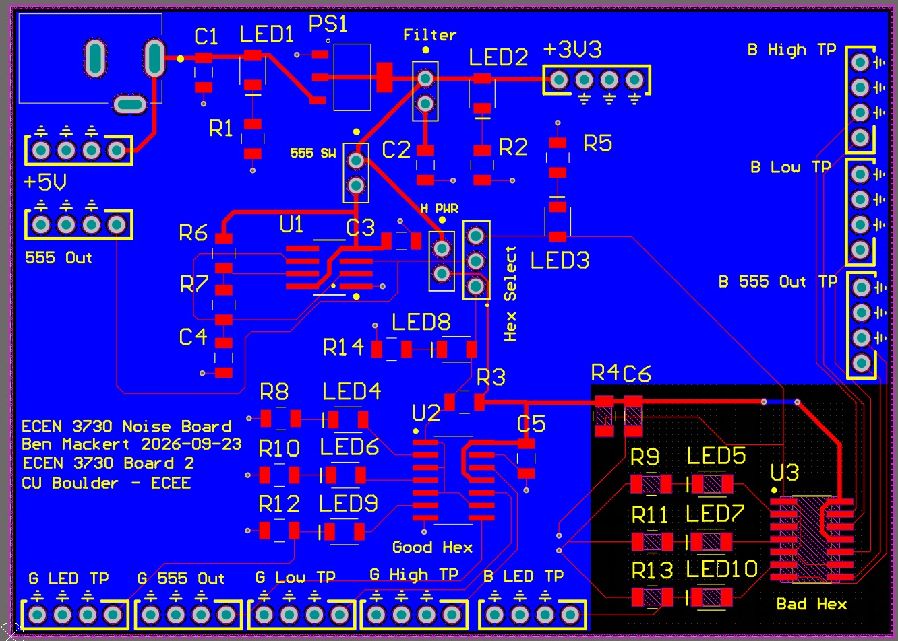

ECEN 3730 · PCB Design · Fall 2026
Switching-noise demonstrator: good layout vs. bad layout
A 3.5 × 2.5 in two-layer board with the same SN74AHC14 circuit on it twice. One copy has a solid ground plane and decoupling 4 mm from VCC. The other returns ground through a 35 mm, 6 mil trace and has its cap 28 mm away. That makes the board a controlled experiment where layout is the only variable.
The detail I like most: spare gates tied permanently HIGH and LOW act as probes of the chip's on-die VCC and ground, so you can see bounce inside the package for $0.
- ~60 vs ~600 mVestimated L·dI/dt
- 0DRC violations
- 11labeled 10× probe test points